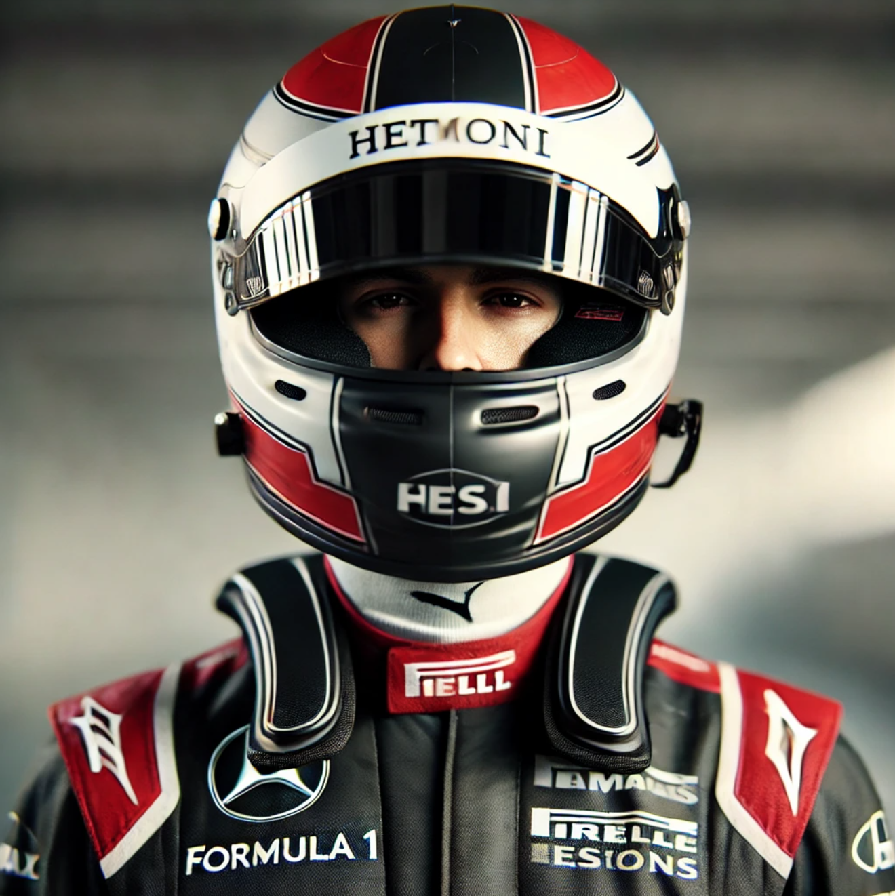
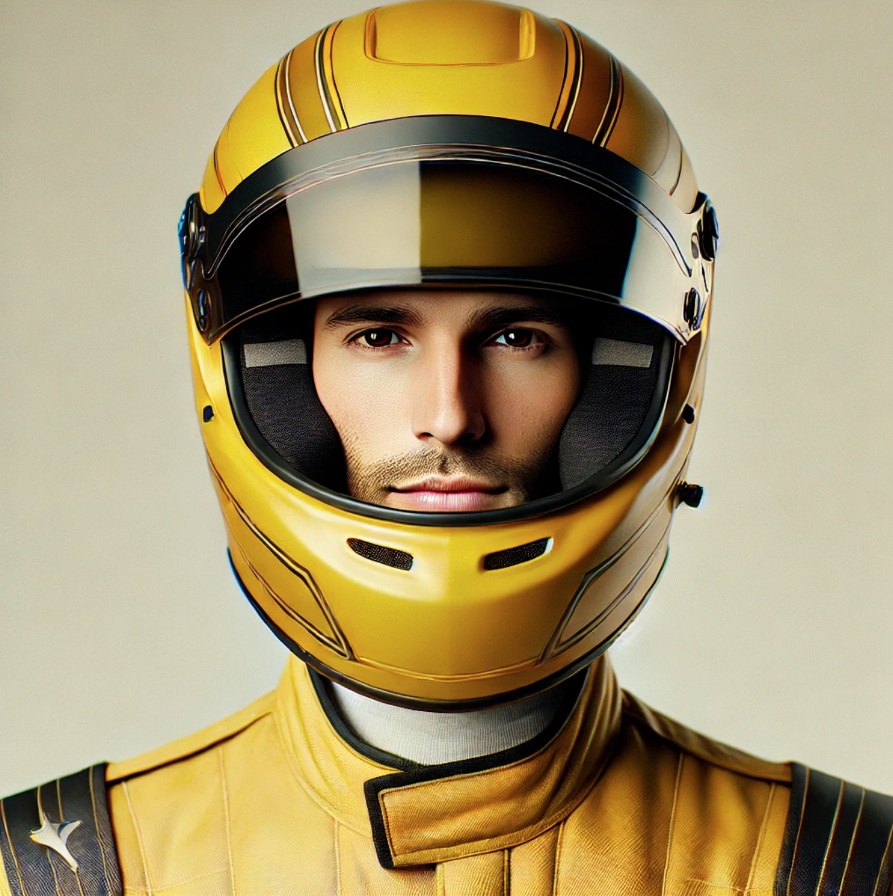
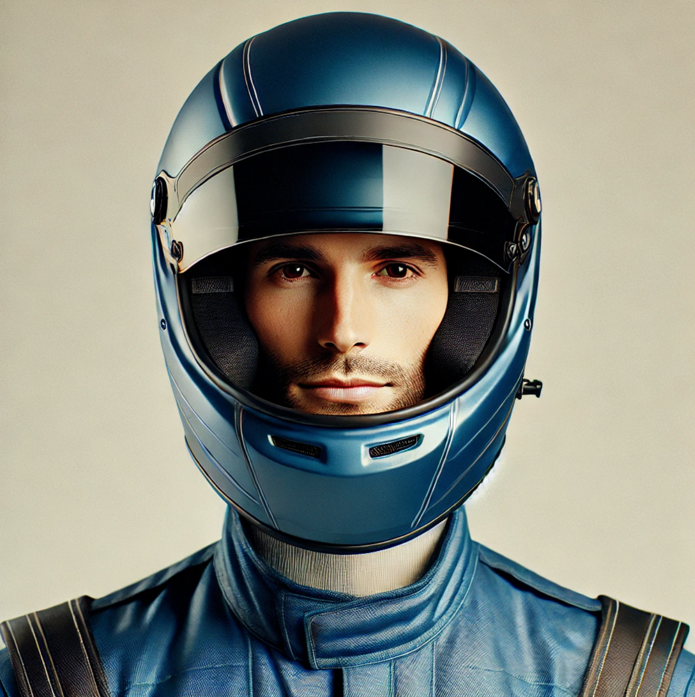

Race Tracker
Tilføj spiller
Vælg ræs-type:
Lap Counts
Fastest Lap
Opsæt race
Start Race
Opret ny spiller
Indtast spillernavn:
Vælg bil via kamera
Vælg din profil
  
Gem spiller
Tilbage
Opsæt Race
Antal runder:
Gem race
Tilbage
Race i gang
Vis tiderne
Tilbage til forside
Rundetider
Runde
Luk
Vælg bilfarve
Brug kamera
Kamera vil blive vist her...
Juster tolerance
Juster farve
Tolerance:
Tolerance:
50
Threshold:
Threshold:
100
Luk
Accepter farvevalg